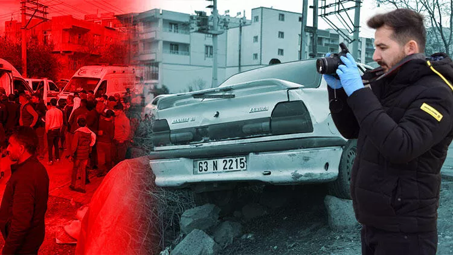
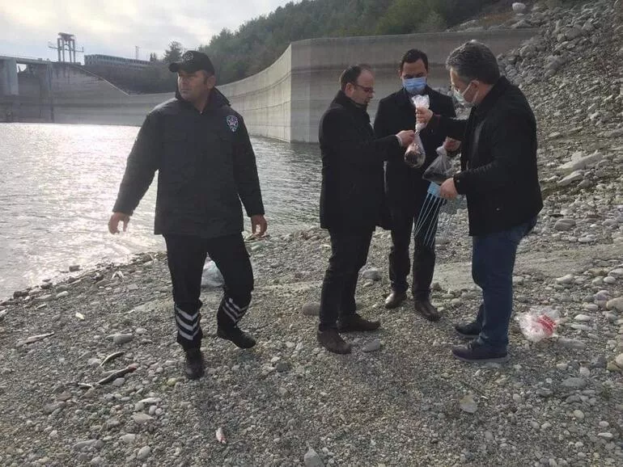

28.12.2021
Şanlıurfa'nın Siverek ilçesinde, sürücüsünün fren yerine gaza basmasıyla kontrolden çıkan otomobil, okuldan çıkan öğrencilere çarptı. Kazada 11 kız öğrenci yaralanırken, yol kenarındaki taşlara çarparak duran otomobilin sürücüsü ise kaçtı.
Kaza, akşam saatlerinde Fırat Mahallesinde meydana geldi. Kimliği henüz öğrenilemeyen 63 N 2215 plakalı otomobilin sürücüsü, iddiaya göre fren yerine gaza basınca Siverek Kız Anadolu Lisesi’nden çıkarak evlerine dönen öğrencilerin arasına daldı.
28.12.2021
Muğla’nın Bodrum ilçesi açıklarındaki 2 ayrı olayda Yunan askerlerince Türk karasularına geri itilen aralarında kadın ve çocukların da bulunduğu 56 düzensiz göçmen kurtarıldı.
Bodrum açıklarındaki 2 ayrı olayda 2 lastik bot içerisinde bir grup düzensiz göçmen olduğu bilgisini alan Bodrum Sahil Güvenlik Karakol Komutanlığı ekipleri, belirtilen bölgelere gitti. Yunanistan unsurlarınca Türk Karasularına geri itilen lastik botlar içerisinde aralarında kadın ve çocukların da olduğu 28 düzensiz göçmen, Sahil Güvenlik botuna alınarak kurtarıldı.

28.12.2021
Osmaniye'nin Kadirli ilçesindeki Aslantaş Baraj Gölü'nde yüzlerce balık, kıyıya vurdu. Tarım ve Orman Müdürlüğü ekipleri, ölü balıklar ile sudan incelenmesi için numune aldı.
Ceyhan Nehri üzerinde kurulu olan Aslantaş Barajı'nın Kadirli ilçesi Kızyusuflu ve Karatepe köyleri arasında kalan bölümündeki gölde kıyıya vuran yüzlerce balığı görenler, durumu yetkililere bildirdi.